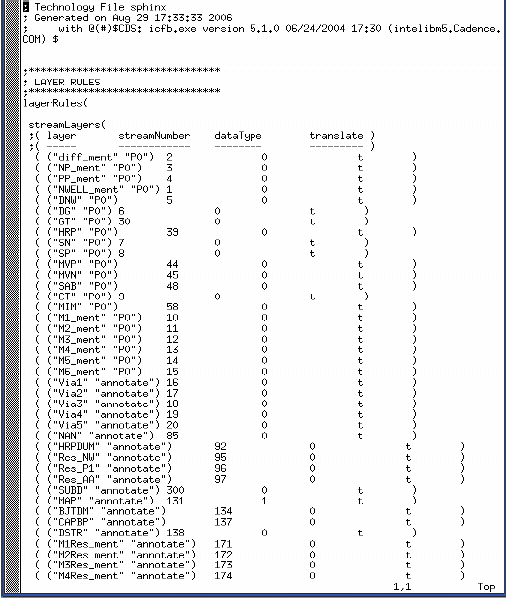

Calibre layers
can be mapped Cadence drawn layers in the cellmap file, and you
need to identify the corresponding Calibre layer and Cadence drawn
layer.
As explained in Layer Map Statements to Optimize the Cellmap File, certain Calibre layers should
be mapped to Cadence drawn layers in the cellmap file. These steps
illustrate how to match the Calibre layers to the Cadence layers.
See “Layer Mapping Syntax” for a definition of the layer
mapping statement.
Procedure
- In Cadence Virtuoso, choose to
display the Technology File Toolbox.
- Click Dump.
The Dump Technology File dialog box displays.
- Select a “Technology Library”
name from the dropdown menu; enable the “layerRules” options; enter
a name for the file into the ASCII Technology File field; click OK.
A
Cadence technology file is output containing the layer names and
their GDS numbers as shown in the following figure.
Figure 1. Cadence Technology
File
- Identify the device you want
to map.
- Determine the layers that
device is composed of using the LVS rule file. The following excerpt
shows the layers that make up the MN(nch) device.
// LVS rule file
Layer active 1
Layer nplus 2
Layer poly 3 <----- poly has a GDS number of 3
// NMOS Device
ndiff = active and nplus
ngate = poly and ndiff <----- device contains poly
nsd = ndiff not ngate
DEVICE MN(nch) ngate poly(G) nsd(S) nsd(D)
- Determine the mapping of device
layers to drawn layers.
For example, the layer ngate
in the above rule file maps to the drawn layer poly, which has GDS
layer number 3.
- Check the Cadence technology
file and find the Cadence layer names that corresponds to each GDS
layer number you plan to map.
In the example rule file from
Step 5, we want to find the Cadence layer name for layer 3. From Figure 1 (or the following excerpt), you can
see that Cadence layer name PO has a GDS number of 3.
streamLayers(
;( Layer streamNumber dataType translate )
;( ----- ------------ -------- --------- )
( ("act" "drawing") 1 0 t )
( ("PO" "drawing") 3 0 t )
- In the cellmap file, map the
Calibre layers to the Cadence layers you identified in the technology
file.
In this example, derived Calibre
layer ngate corresponds to drawn layer poly, which is mapped to
the Cadence layer PO.
;Layer mapping part of cell map file
mgc_layer_map( list(
list( "ngate" '(PO drawing))
list( "poly" '(PO drawing))
list( "nsd" '(act drawing))
)
)
- Map the remaining device layers
using the steps in this procedure.
In the cellmap except shown
with Step 8, Calibre layer poly is mapped to Cadence layer PO, and
Calibre derived layer nsd is mapped to Cadence layer act.